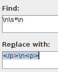
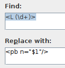

Starting from...
Lou Burnard Consulting
Lou Burnard Consulting
pdftohtml myPDF.pdf. This will (rather slowly) produce lots of graphic files, one per page. Put them all in a folder together.cd myPDF-folder; for f in *.png ; do tesseract $f `basename $f .png` -l XXX; donereplacing XXX with the ISO 3 letter code for your language (e.g. bos for Bosnian)
& first; and pointy brackets to <. All characters should be in Unicode.</p><p> at the start of each new oneIn most cases, you should be able to use the oXygen find-and-replace command to fix up a lot of the text. For example,
| If you have... | regexp find and replace | effect |
|---|---|---|
| blank lines between paragraphs |  | will introduce <p> tags in the right place |
tags like this <L 42> at the start of each new page |  | will replace them with appropriate <lb> tags. |